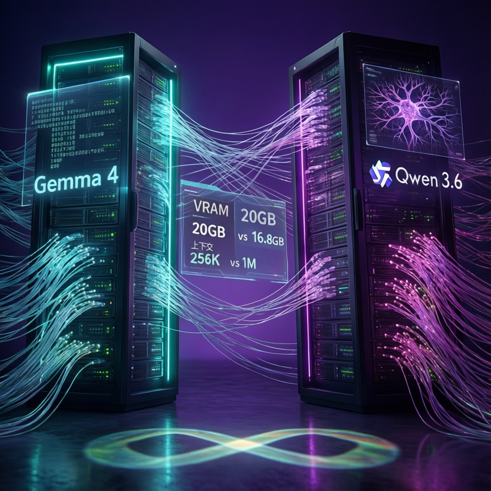

開源人工智慧模型競爭白熱化，兩大巨頭分別推出可在單一 GPU 執行的輕量級架構，卻展現媲美數百億引數級閉源模型的實力。本次報告透過實測比較，揭示兩者在編碼能力、推理表現及應用場景的關鍵差異。

開源 AI 領域正經歷前所未有的效能躍升。Google DeepMind 推出的 Gemma 4 與阿里巴巴的 Qwen 3.6 雙雙打破「規模即效能」的傳統認知，以相對精簡的引數規模實現頂尖表現。研究指出，Qwen 3.6 的 270 億引數版本在軟體工程基準測試中，竟超越自家前代 3970 億引數的旗艦模型，顯示開源模型已進入效率優先的新紀元。
數據示，兩款模型均採開源權重架構，可在消費級 GPU 上執行，卻能與 Anthropic Claude 4.5 Opus 等閉源巨頭一較高下。這項突破為開發者與企業提供了前所未有的靈活性，無需依賴雲端 API 即可部署企業級 AI 能力。
業界觀察，兩者在硬體適配性上呈現不同策略。Qwen 3.6 採 278 億引數設計，經 Q4 量化後約需 16.8GB VRAM；Gemma 4 則以 307 億引數換取更高效能，記憶體需求約 20GB。專家分析指出，24GB 視訊記憶體環境可順暢執行兩者，但 16GB 環境下 Qwen 具備較大安全餘裕。
研究指出，兩大模型在多項權威測試中展現差異化優。Qwen 3.6 在 SWE-Bench Verified 取得 77.2 分，該測試要求模型修復真實開源程式碼庫中的實際漏洞，而非玩具級問題。此成績較前代 Qwen 3.5 的 3970 億引數混合專家模型更為出色，引數效率提升近 15 倍。
TerminalBench 2.0 測試中，Qwen 3.6 以 59.3 分與 Anthropic 的 Claude 4.5 Opus 打成平手，後者為引數規模遠大的閉源模型。Skills-Bench 測試橫跨 78 項特定編碼技能，Qwen 3.6 從前代 27.2 分躍升至 48.2 分，單代進步幅度達 77%。
Gemma 4 則在單輪推理場景展現強大實力。數據顯示，其在 AIME 2026 競賽數學獲 89.2%，Arena AI 人類偏好評比中以 1452 Elo 位列所有開源模型第三，較前代 Gemma 3 的 1365 大幅提升。LiveCodeBench v6 限時競賽程式設計中，Gemma 4 取得 80% 成績；Codeforces 評級達 2150 Elo，相當於「候選大師」級別。
Qwen 3.6 的 270 億引數密集版本在 SWE-Bench Verified 測試中超越自家 3970 億引數前代旗艦，這項突破使開源社群為之振奮，證明模型架構優化與訓練策略的進步，已能彌補甚至超越純粹的規模擴張。
兩大模型均已催生實質應用生態。Qwen 方面，開源社群開發出終端編碼代理 Qwen Code、GitHub Action 自動審查工具 CodeBubb，以及可在 RTX 5090 達 158 token/秒 的 Windows Server 專案。MTPLX 專案更透過原生多 token 預測，在 Apple Silicon 實現 2.24 倍加速。阿里巴巴與 Fireworks AI 合作，進一步降低部署成本與延遲。
Gemma 4 的應用同樣多元：結合 LangGraph 的多智慧體研究分析師、支援 17 種語言的離線字幕翻譯器、協助非洲教師離線生成教案的工具，以及完全於瀏覽器 WebGPU 執行的 Chrome 擴充功能，無需 API 金鑰或雲端連線。Herundo 公司的案例研究更顯示，Gemma 4 可在保持基準效能的同時，訓練抵抗對抗性覆寫攻擊。
實測視覺生成任務中，兩者呈現不同特性。以 Three.js 生成 3D 幾何光暈場景為例，Gemma 4 產出符合規格的暗色場景與清晰多面體；Qwen 3.6 則出現過度曝光。然而 Netflix 片頭動畫任務中，Qwen 的表現則更為穩定。
授權條款方面，兩者存在關鍵差異。Qwen 採全 Apache 2.0 授權無附加條款，對企業整合最為友善；Gemma 使用 Google 自定義授權，允許商業使用但有大規模部署時需留意特定條款。專家分析建議，高度監管產業或需完整法律確定性的組織，Qwen 的標準開源授權可能更具吸引力。
本次報告揭示，開源 AI 已進入「以小博大」的新階段。數據顯示，數百億引數級模型透過架構創新與訓練優化，已能挑戰數千億引數巨獸的地位。這項趨勢預計將加速邊緣 AI 普及，使更多開發者與組織能在本地部署企業級能力。
研究指出，隨著多 token 預測、強化學習微調等技術成熟，開源模型的迭代速度有望超越閉源對手。無論最終選擇 Qwen 3.6 或 Gemma 4，開發者皆已站在開源 AI 歷史性轉折點，見證一場由效率與創新驅動的技術革命。